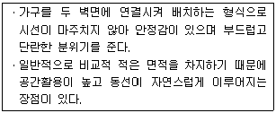
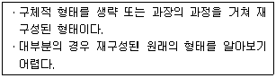
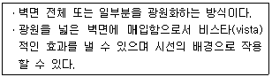
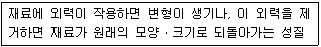
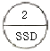

실내건축기능사 (2013-10-12 기출문제)
1과목: 실내디자인
1. 수직선이 주는 조형효과로 가장 알맞은 것은?
- 위엄
- 안정
- 약동감
- 유연함
(정답률: 95%)

2. 다음 설명에 알맞은 주택 거실의 가구 배치 방법은?

- 직선형
- ㄱ자형
- ㄷ자형
- 자유형
(정답률: 90%)
3. 실내디자인의 개념과 가장 거리가 먼 것은?
- 순수예술
- 디자인 활동
- 실행과정
- 전문과정
(정답률: 89%)
4. 비슷한 형태, 규모, 색채, 질감, 명암, 패턴의 그룹을 하나의 그룹으로 지각하려는 경향을 말하는 형태의 지각 심리는?
- 근접성
- 연속성
- 폐쇄성
- 유사성
(정답률: 80%)
5. 다음 설명에 알맞은 형태의 종류는?

- 자연형태
- 인위형태
- 추상적 형태
- 이념적 형태
(정답률: 83%)
6. 주택에서 작업순서에 따른 부엌 작업대의 배치 순서로 옳은 것은?
- 준비대 → 개수대 → 조리대 → 가열대 → 배선대
- 준비대 → 조리대 → 개수대 → 가열대 → 배선대
- 준비대 → 조리대 → 가열대 → 개수대 → 배선대
- 준비대 → 가열대 → 개수대 → 조리대 → 배선대
(정답률: 87%)
7. 실내 공간의 구성 요소 중 외부로부터의 방어와 프라이버시를 확보하고 공간의 형태와 크기를 결정하며 공간과 공간을 구분하는 수직적 요소는?
- 보
- 벽
- 바닥
- 천장
(정답률: 97%)
8. 마르셀 브로이어에 의해 디자인된 의자로, 강철 파이프를 구부려서 지지대 없이 만든 캔버터리식 의자는?
- 체스카 의자
- 파이미오 의자
- 레드 블루 의자
- 바르셀로나 의자
(정답률: 59%)
9. 실내디자인의 기본 조건 중 가장 우선시 되어야 하는 것은?
- 기능적 조건
- 정서적 조건
- 환경적 조건
- 경제적 조건
(정답률: 91%)
10. 다음 설명에 알맞은 건축화 조명의 종류는?

- 코브 조명
- 광창 조명
- 광천장 조명
- 코니스 조명
(정답률: 84%)
11. 상점의 판매형식 중 대면판매에 관한 설명으로 옳은 것은?
- 직원의 정위치를 정하기가 용이하다.
- 측면판매에 비해 넓은 진열면적의 확보가 가능하다.
- 상품의 계산이나 포장을 할 경우 별도의 공간확보가 요구된다.
- 고객이 직접 진열된 상품을 접촉할 수 있는 관계로 충동구매와 선택이 용이하다.
(정답률: 67%)
12. 다음 중 리듬의 원리와 가장 거리가 먼 것은?
- 변이
- 점이
- 대비
- 반복
(정답률: 64%)
13. 여닫이문과 기능은 비슷하나 자유 경첩의 스프링에 의해 내ㆍ외부로 모두 개폐되는 문은?
- 자재문
- 주름문
- 미닫이문
- 미서기문
(정답률: 64%)
14. 균형의 원리에 관한 설명으로 옳지 않은 것은?
- 크기가 큰 것이 작은 것보다 시각적 중량감이 크다.
- 색의 중량감은 색의 속성 중 색상에 가장 영향을 받는다.
- 불규칙적인 형태가 기하학적 형태보다 시각적 중량감이 크다.
- 복잡하고 거친 질감이 단순하고 부드러운 것보다 시각적 중량감이 크다.
(정답률: 67%)
15. 질감(Texture)을 선택할 때 고려하여야 할 사항과 가장 거리가 먼 것은?
- 촉감
- 색조
- 스케일
- 빛의 반사와 흡수
(정답률: 39%)
16. 간접조명에 관한 설명으로 옳지 않은 것은?
- 조명률이 낮다.
- 실내반사율의 영향이 크다.
- 국부적으로 고조도를 얻기 편리하다.
- 경제성보다 분위기를 목표로 하는 장소에 적합하다.
(정답률: 76%)
17. 잔향시간에 관한 설명으로 옳지 않은 것은?
- 잔향시간은 실의 용적에 비례한다.
- 잔향시간은 벽면의 흡음도에 영향을 받는다.
- 잔향시간은 실의 평면형태와 밀접한 관계가 있다.
- 회화청취를 주로 하는 실에서는 짧은 잔향시간이 요구된다.
(정답률: 63%)
18. 다음 중 결로의 발생 원인과 가장 거리가 먼 것은?
- 환기 부족
- 실내의 불결
- 시공의 불량
- 실내외의 온도차
(정답률: 82%)
19. 급기는 자연으로 행하고 기계력에 의해 배기하는 환기법인 흡출식 환기법의 적용이 가장 바람직한 공간은?
- 화장실
- 수술실
- 영화관
- 전기실
(정답률: 81%)
20. 다음 중 일조조절의 목적과 가장 거리가 먼 것은?
- 하계의 적극적인 수열
- 작업면의 과대 조도 방지
- 실내 조도의 현저한 불균일 방지
- 실내 휘도의 현저한 불균일 방지
(정답률: 55%)
2과목: 실내환경
21. 다음 목재의 강도 중 가장 큰 것은?
- 응력방향이 섬유방향에 평행한 경우의 인장강도
- 응력방향이 섬유방향에 평행한 경우의 압축강도
- 응력방향이 섬유방향에 수직한 경우의 인장강도
- 응력방향이 섬유방향에 수직한 경우의 압축강도
(정답률: 58%)
22. 다음 중 천연골재의 종류에 해당되지 않는 것은?
- 산모래
- 강자갈
- 깬자갈
- 바다자갈
(정답률: 88%)
23. 아스팔트의 양부 판별에 중요한 아스팔트의 경도를 나타내는 것은?
- 신도
- 감온성
- 침입도
- 유동성
(정답률: 63%)
24. 합판에 관한 설명으로 옳지 않은 것은?
- 단판의 매수를 짝수를 원칙으로 한다.
- 합판을 구성하는 단판을 베니어라고 한다.
- 함수를 변화에 따른 팽창ㆍ수축의 방향성이 없다.
- 뒤틀림이나 변형이 적은 비교적 큰 면적의 평면재료를 얻을 수 있다.
(정답률: 82%)
25. 단열재료에 관한 설명으로 옳지 않은 것은?
- 일반적으로 다공질 재료가 많다.
- 일반적으로 역학적인 강도가 크다.
- 단열재료의 대부분은 흡음성도 우수하다.
- 일반적으로 열전도율이 낮을수록 단열성능이 좋다.
(정답률: 43%)
26. 다음 중 합성수지계 접착제에 해당되지 않는 것은?
- 에폭시 접착제
- 카세인 접착제
- 비닐수지 접착제
- 멜라민수지 접착제
(정답률: 60%)
27. 콘크리트의 슬럼프 시험을 하는 가장 주된 목적은?
- 공기량 측정
- 시공연도 측정
- 골재의 입도 측정
- 콘크리트의 강도 측정
(정답률: 54%)
28. 다음 중 사용 목적에 따른 건축재료의 분류에 해당되지 않는 것은?
- 유기재료
- 구조재료
- 마감재료
- 차단재료
(정답률: 79%)
29. 동과 아연의 합금으로 가공성, 내식성 등이 우수하며 계단 논슬립, 코너비드 등의 부속철물로 사용되는 것은?
- 청동
- 황동
- 포금
- 주석
(정답률: 75%)
30. 점토의 일반적인 성질에 관한 설명으로 옳지 않은 것은?
- 압축강도는 인장강도의 약 5배 정도이다.
- 점토 입자가 미세할수록 가소성은 좋아진다.
- 알루미나가 많은 점토는 가소성이 좋지 않다.
- 색상은 철산화물 또는 석회물질에 의해 나타난다.
(정답률: 61%)
3과목: 실내건축재료
31. 목재의 인공건조법에 관한 설명으로 옳지 않은 것은?
- 균류에 의한 부식과 충해방지에는 효과가 없다.
- 훈연건조는 실내온도의 조절이 어렵다는 단점이 있다.
- 단시간에 사용목적에 따른 함수율까지 건조시킬 수 있다.
- 열기건조는 건조실에 목재를 쌓고 온도, 습도 등을 인위적으로 조절하면서 건조하는 방법이다.
(정답률: 69%)
32. 유성페인트의 성분 구성으로 가장 알맞은 것은?
- 안료+물
- 합성수지+용제+안료
- 수지+건성유+희석제
- 안료+보일드유+의석제
(정답률: 47%)
33. 다음의 석재 중 내화성이 가장 작은 것은?
- 사암
- 안산암
- 용회암
- 대리석
(정답률: 58%)
34. 유리 내부에 금속망을 삽입하고 압착 성형한 판유리로서 방화 및 방도용으로 사용되는 것은?
- 망입유리
- 접합유리
- 열선흡수유리
- 열선반사유리
(정답률: 74%)
35. 다음 중 수경성 미장재료에 해당되는 것은?
- 회사벽
- 회반죽
- 시멘트 모르타르
- 돌로마이트 플라스터
(정답률: 53%)
36. 타일의 주체를 이루는 부분으로, 시유 타일의 경우에는 표면의 유약을 제거한 부분을 의미하는 것은?
- 첨지
- 소지
- 지첨판
- 뒷붙임
(정답률: 45%)
37. 금속제 용수철과 완충유와의 조합작용으로 열린 문이 자동으로 닫혀지게 하는 것으로 바닥에 설치되며, 일반적으로 무거운 중량창호에 사용되는 창호철물은?
- 크레센트
- 도어 스톱
- 도어 행거
- 플로어 힌지
(정답률: 69%)
38. 매스 콘크리트의 균열 방지 및 감소 대책으로 옳지 않은 것은?
- 파이프쿨링을 한다.
- 저발열성 시멘트를 사용한다.
- 부재에 이음매를 설치하지 않는다.
- 콘크리트의 온도상승을 적게 한다.
(정답률: 69%)
39. 시멘트의 분말도에 관한 설명으로 옳지 않은 것은?
- 분말도가 클수록 응결이 느려진다.
- 분말도가 너무 크면 풍화하기 쉽다.
- 단위중량에 대한 표면적으로 표시된다.
- 브레인법 또는 표준체법에 의해 측정할 수 있다.
(정답률: 54%)
40. 다음 설명에 알맞은 재료의 역학적 성질은?

- 소성
- 점성
- 탄성
- 취성
(정답률: 91%)
41. 제도용구 중 운형자는 무엇을 그리는데 사용하는가?
- 수직선
- 수평선
- 곡선
- 해칭선
(정답률: 87%)
42. 나무구조에서 흠대에 대한 설명으로 옳은 것은?
- 기둥 맨 위 처마 부분에 수평으로 거는 가로재를 말한다.
- 기둥과 기둥 사이에 가로로 꿰뚫어 넣는 수평재를 말한다.
- 한식 또는 절충식 구조에서 인방 자체가 수장을 겸하는 창문틀을 말한다.
- 토대에서 수평 변형을 방지하기 위하여 쓰이는 부재를 말한다.
(정답률: 34%)
43. 다음 중 선의 표시가 옳지 않은 것은?
- 숨은선 - 실선
- 중심선 - 일점쇄선
- 치수선 - 가는실선
- 상상선 - 이점쇄선
(정답률: 73%)
44. 다음 기호가 나타내는 것은?

- 강철 문, 창호번호 2번
- 스테인리스 문, 창호번호 2번
- 스테인리스 창, 창호 모듈 호칭 치수 20×20
- 강철 창, 창호 모듈 호칭 치수 20×20
(정답률: 82%)
45. 휨, 전단, 비틀림 등에 대하여 역학적으로 유리하며, 특히 단면에 방향성이 없으므로 뼈대의 입체구성을 하는데 적합하고 공장, 체육관, 전시장 등의 건축물에 많이 사용되는 구조는?
- 경량철골구조
- 강관구조
- 막구조
- 조립식구조
(정답률: 38%)
46. 건축물의 주요 구조부가 갖추어야 할 기본조건으로 가장 거리가 먼 것은?
- 안전성
- 내구성
- 경제성
- 기능성
(정답률: 32%)
47. 고력볼트 접합에 대한 설명으로 옳지 않은 것은?
- 피로강도가 높다.
- 볼트는 고탄소강, 합금강으로 만든다.
- 조임순서는 단부에서 중앙으로 한다.
- 임팩트랜치 및 토크렌치로 조인다.
(정답률: 53%)
48. 속빈 콘크리트 기본 블록의 두께 치수가 아닌 것은?
- 220mm
- 190mm
- 150mm
- 100mm
(정답률: 45%)
49. 목구조에 대한 설명 중 옳지 않은 것은?
- 자재의 수급 및 시공이 간편하다.
- 저층의 주택과 같이 비교적 소규모 건축물에 적합하다.
- 목재는 가볍고 가공성이 좋으며 친화감이 있다.
- 목재는 열전도율이 커서 연소하기 쉽다.
(정답률: 58%)
50. 철근 콘크리트 구조의 장점이 아닌 것은?
- 내화, 내구, 내진적이다.
- 철골구조보다 장스팬이 가능하다.
- 설계가 자유롭다.
- 고층 건물이 가능하다.
(정답률: 54%)
4과목: 건축일반
51. 다음 중 철골구조에서 주각을 구성하는 부재는?
- 베이스 플레이트
- 커버 플레이트
- 스티프너
- 래티스
(정답률: 53%)
52. 조립식구조의 특성과 가장 거리가 먼 것은?
- 공기가 단축된다.
- 공사비가 증가된다.
- 품질향상과 감독관리가 용이하다.
- 대량생산이 가능하다.
(정답률: 77%)
53. 다음의 각종 설계도면에 대한 설명 중 옳지 않은 것은?
- 계획 설계도에는 구상도, 조직도, 동선도 등이 있다.
- 기초 평면도의 축척은 평면도와 같게 한다.
- 단면도는 건축물을 각 층마다 창틀 위에서 수평으로 자른 수평투상도로서, 실외 배치 및 크기를 나타낸다.
- 전개도는 건물 내부의 입면을 정면에서 바라보고 그리는 내부 입면도이다.
(정답률: 53%)
54. 지름이 13mm인 이형 철근을 250mm 간격으로 배근할 때 그 표현으로 옳은 것은?
- D13-250@
- 250@D13
- @250-D13
- D13@250
(정답률: 77%)
55. 다음 중 선긋기의 유의사항으로 옳은 것은?
- 모든 종류의 선은 일목요연하게 같은 굵기로 긋는다.
- 축척과 도면의 크기에 따라서 선의 굵기를 다르게 한다.
- 한번 그은 선은 중복해서 여러번 긋는다.
- 가는 선일수록 선의 농도를 낮게 조정한다.
(정답률: 56%)
56. 철골구조 접합방법 중 부재간의 마찰력에 의하여 응력을 전달하는 접합방법은?
- 듀벨접합
- 핀접합
- 고력볼트접합
- 용접
(정답률: 66%)
57. 벽돌구조에서 1.5B 벽체의 두께는 몇 mm인가?
- 90mm
- 190mm
- 290mm
- 390mm
(정답률: 71%)
58. 다음 중 가구식 구조에 대한 설명으로 옳은 것은?
- 기둥 위에 보를 겹쳐 올려놓은 목구조 등을 말한다.
- 벽체가 직접 수직 및 수평하중을 받도록 설계한 구조방식이다.
- 전 구조체가 일체가 되도록 한 구조를 말한다.
- 지붕 및 바닥 등의 슬래브를 케이블로 매단 구조를 말한다.
(정답률: 52%)
59. 다음 중초고층 건물의 구조로 가장 적합한 것은?
- 현수구조
- 절판구조
- 입체트러스구조
- 튜브구조
(정답률: 45%)
60. 건물의 외부보를 제외하고 내부에는 보 없이 바닥판으로 구성하여 그 하중을 직접 기둥에 전달하는 슬래브의 종류는?
- 2방향 슬래브
- 1방향 슬래브
- 플랫 슬래브
- 워플 슬래브
(정답률: 68%)